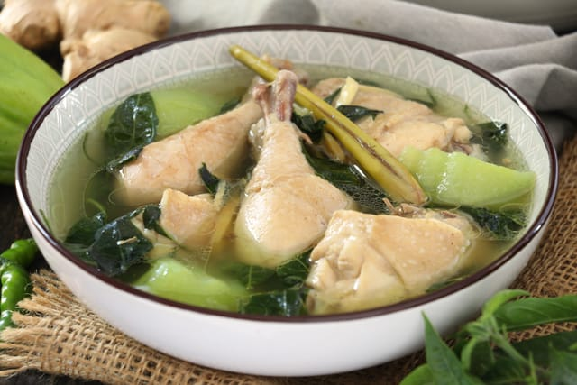

Chicken Tinola Recipe
What is Chicken Tinola?
Chicken Tinola is a Filipino soup dish that is easy to make and is perfect for cold weather. It is typically made with chicken, chayote squash or papaya, bok choy, and spinach, simmered with fresh ginger in a savory broth. It is often served with white rice.
Ingredients
1 tablespoon cooking oil
1 medium onion, chopped
2 cloves garlic, minced
1 (1 1/2 inch) piece fresh ginger, peeled and thinly sliced
1 tablespoon fish sauce
3 pounds chicken legs and thighs, rinsed and patted dry
2 (14 ounce) cans chicken broth
1 chayote squash, peeled and cut into bite-sized pieces
salt and ground black pepper to taste
1 head bok choy, chopped
1 (8 ounce) package fresh spinach, chopped
Instructions / How to Cook
1. Gather all ingredients.
2. Heat oil in a large pot over medium heat. Add onion and garlic; cook and stir until fragrant, about 2 minutes.
3. Add ginger and fish sauce; cook and stir for 1 to 2 minutes. Stir in chicken and cook for 5 minutes.
4. Pour in chicken broth and cook for 5 minutes. Add squash and simmer until chicken is no longer pink in the center, about 10 minutes. Season with salt and pepper.
5. Add bok choy and spinach; cook until spinach is just wilted, 1 to 2 minutes. Serve hot.